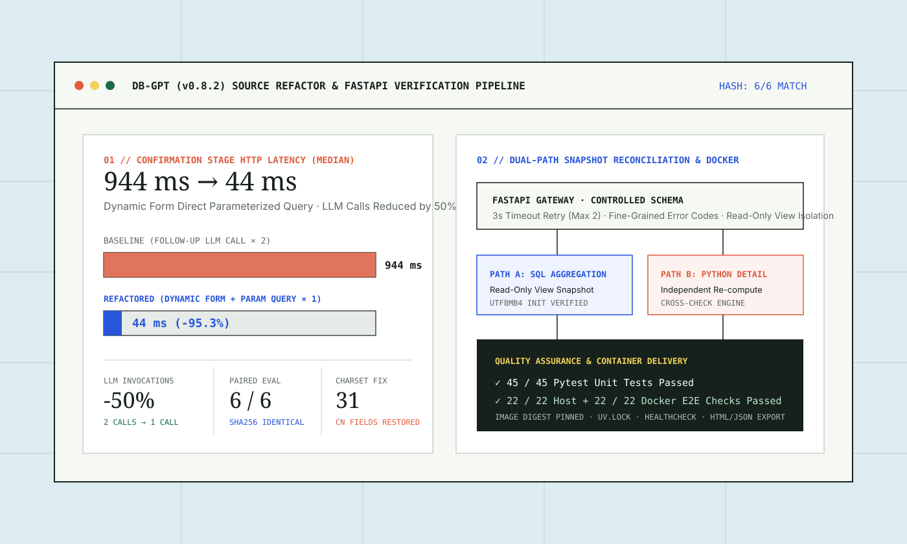

AGENT / DB-GPT v0.8.2 944ms → 44ms · 45 单测通过01 / 04
AI AGENT & DATA SERVICE · 项目负责人 · 2026.01 - 2026.10
DB-GPT 开源 AI 工具二次开发与数据分析服务
2026 中国计算机设计大赛省级二等奖 ｜ 现有代码改造、FastAPI 后端与 Docker 部署
深度阅读并二次改造开源 Python AI 框架 DB-GPT（v0.8.2）现有代码，挂载自定义运营数据分析模块，打通从动态参数补齐、双路数据质量复算到容器化端到端验收的完整闭环。
- 现有 AI 工具源码改造与链路优化：阅读并二次改造开源框架 DB-GPT（v0.8.2），挂载自定义分析模块；针对缺参追问二次调用大模型耗时高痛点，改造前后端为动态表单确认直连参数化查询，在 6 组配对评测中将单任务模型调用减少 50%（2 次 → 1 次），确认阶段服务端 HTTP 中位耗时由 944 ms 降至 44 ms（6/6 结果哈希一致）。
- FastAPI 后端服务与数据质量校验：基于 FastAPI 开发受控参数校验、3s 超时重试（最多 2 次）、细粒度结构化错误码与只读视图隔离接口；实现同一快照下“SQL 聚合 + Python 明细”双路独立复算服务，排查修复容器初始化字符集导致 31 个中文字段筛选为空的编码缺陷（45 项单元测试全部通过）。
-
网站交互模块与 Docker 容器化部署：开发动态条件补齐表单、执行轨迹展示、条形图渲染及 HTML/JSON 报告导出 Web 页面；使用 Docker Compose 编排后端服务与数据库容器（锁定镜像摘要与
uv.lock、配置健康检查与数据卷持久化），通过本机与容器双环境各 22 项端到端自动化验收。
LLM Calls -50% (2→1)
HTTP 944ms → 44ms
6/6 Hash Match
45/45 Unit Tests
22×2 E2E Verified
PYTHON / FASTAPI / DB-GPT (v0.8.2) / DOCKER COMPOSE / UV / SQL
查看 GitHub 仓库